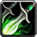
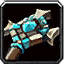
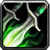
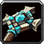

We have decided to roll on the ever so popular Herod-PVP server that we will call home for the long term.
Make sure to reserve your names before launch on Herod-PVP Horde faction.
We’re going to keep the WoW Classic pre-launch test realms open and available for play through the weekend. Please feel free to test WoW Classic as much as you like.
The pre-launch test will end on Monday, 12 August at 6:00 p.m. CEST. We are not planning an in-game event for shutdown this time.
Thank you very much to everyone who came out and provided the testing we were hoping for! Thanks to you, we’ve been able to fine-tune our plans for launch, and we even captured a few issues that we were able to solve yesterday.
We’ll see you in Azeroth!
Our global pre-launch test of WoW Classic will begin on Thursday, August 8 at 11:00 a.m. PDT and is scheduled to end on Friday, August 9. This test will be available to all World of Warcraft players with a current subscription or active game time in all regions. The maximum character level will be 15.
We ask that players please log-in and play as much as possible during the first two hours of the test – 11:00 a.m. PDT to 1:00 p.m. PDT, as that is when we’ll be actively monitoring for issues important to launch.
We have been waiting patiently to hear from Blizzard if there will be another stress test before launch. We will be able to reserve our character names before launch on August 13th. More details to come.
We have been updating the website, and pre-launch roster to reflect who we have ready to play with us. If you have any suggestions, questions, or want to converse, we are in the discord on the daily. Stop in and say what up.
We have now reached a stage where WoW Classic is in a good state for reconciling remaining issues, and we intend to shift our focus away from the closed beta, which will end on July 12.
Internally, we’re working through the aforementioned bug fixes, testing the high-level zones such as Eastern Plaguelands, and doing our raid testing. We’ll make sure Ragnaros and Onyxia are ready to go.
Thank you!
Next up, we have a stress test scheduled for July 25th and 26th which everyone will be able to participate, as long as you have a subscription for WoW play time.
(The stress test has been cancelled by Blizzard, indefinitely.)
Preparing for World of Warcraft Classic Launch on August 26th, 2019.
Faction: HORDE
Server: HEROD-PVP
Raid Days: WEDNESDAY & THURSDAY
Raid Times: 7PM PST
Loot: ROTATING LOOT COUNCIL
PvP Events: ALL WEEK
We are a bunch of semi-degenerates excited to be back for classic. We came from a message board, which revolves around lifting weights. A lot of us have been around for a few vanilla private servers and of course vanilla retail. We have a good mix of experienced, and not so experienced players, but provide the resources and help to get up to speed if need be.
We have been recruiting players who are chill, looking to have a good time, while also looking to push content at a nice quick, healthy pace. We aren’t trying to min max to the extreme, but we also want to do well when pushing content and having a positive heck of a time while doing it.
We are looking for more class leaders, and other possible leadership roles to fill, if anyone is interested.
We also plan on having a lot of pvp premades and wpvp events. We will definitely be making the alliance on our server wish they weren't alliance any longer.
We are looking looking for players that may or may not have experience, but are willing to put in effort to listen and follow direction, and most importantly, are here to have a good time. If that fits for you, it fits for us.

 


